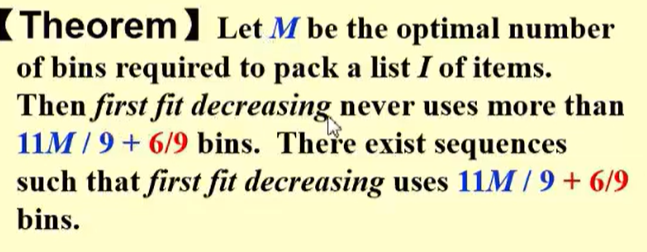

Approximation
:material-circle-edit-outline: 约 380 个字 :fontawesome-solid-code: 15 行代码 :material-image-multiple-outline: 3 张图片 :material-clock-time-two-outline: 预计阅读时间 4 分钟
Intro¶
Approximation Algorithms
Find near optimal solutions in polynomial time
Approximation Ratio
\(\rho (n) = max(\frac{C(A)}{C(OPT),\frac{C(OPT)}{C(A)}}\)
If an algorithm achieves an approximation ratio of \(\rho (n)\), we call it a \(\rho (n)\)-approximation algorithm.
Approximaion Scheme
A polynomial-time algorithm that, for any \(\epsilon > 0\), produces a solution whose cost is within a factor of \(1 + \epsilon\) of the optimal cost.
PTAS: Polynomial-Time Approximation Scheme
FPTAS: Fully Polynomial-Time Approximation Scheme
The difference between PTAS and FPTAS
Bin Packing¶
FirstFit seudo code:
| LessCss | |
|---|---|
the ratio is 1.7
BestFit seudo code:
| LessCss | |
|---|---|
Conclusion
they are all on-line algorithms: place one by one, and the decision is made based on the current state.(落子无悔，之后无法改变)
Not good!!!:
Off-line Algorithms¶
view the entire item set before placing any item.
Trouble maker: the large items
Solution: sort the items into non-increasing order, and then apply the first-fit algorithm.

the bound are updated
the ratio is about 1.2
Simple greedy heuristics can give ralatively good result
The Knapsack Problem¶
A knapsack with a capacity M is to be packed. Given N items. Each item i has a weight wi and a profit pi . If xi is the percentage of the item i being packed, then the packed profit will be pi xi . The goal is to maximize the total profit while keeping the total weight less than or equal to M.
0-1 version: each item can be packed at most once.
What if we are greedy on taking the maximum profit or profit density?
Proof:
The K-center Problem¶
K-center problem: Given a set of points in a metric space, the goal is to find a set of K centers such that the maximum distance from any point to its nearest center is minimized.
What is a distance?
identity,symmetry and triangle inequality